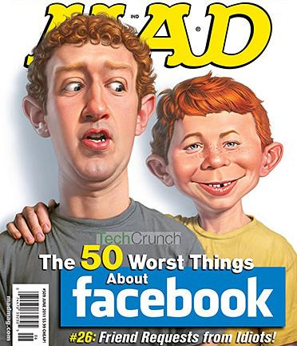

Mark e sua grande habilidade...
A forma que ele roubou ou melhor se inspirou nas ideias para criar facebook foram incriveis
Umas das polemicas mais comentadas é a de vazamentos de dados
Um dos vazamentos mais significativos envolvendo o Facebook ocorreu em março de 2018, quando foi revelado que a empresa Cambridge Analytica, uma consultoria política, havia obtido acesso indevido a dados pessoais de milhões de usuários do Facebook. Esses dados foram coletados por meio de um aplicativo de teste de personalidade chamado "This Is Your Digital Life", que foi instalado por cerca de 270.000 usuários, mas também permitiu a coleta de dados de seus amigos do Facebook. Estima-se que os dados de até 87 milhões de usuários tenham sido comprometidos. Esse vazamento levantou preocupações significativas sobre a privacidade dos usuários do Facebook e a forma como a empresa lida com os dados pessoais. A Cambridge Analytica supostamente usou essas informações para criar perfis psicográficos e direcionar anúncios políticos durante as eleições nos Estados Unidos em 2016.